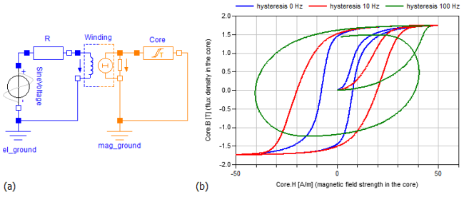

HysteresisHysteresis |
|
Package Contents
|
Static Hysteresis |
|
|
Dynamic Hysteresis (Eddy Currents) |
|
|
Hysteresis losses |
Information
This information is part of the Modelica Standard Library maintained by the Modelica Association.
Introduction
The elements provided in the package Shapes.HysteresisAndMagnets allow for consideration of ferromagnetic and dynamic hysteresis during the simulation of electromagnetic networks. The ferromagnetic hysteresis is a material property of the core material and frequency independent. Due to eddy currents the static ferromagnetic hysteresis is superposed by a frequency dependent hysteresis when the ferromagnetic material is exposed to an alternating magnetic field. Fig 1 exemplary shows the simulated hysteresis characteristics of a simple inductor with an iron core for three different excitation frequencies. Thereby, the 0 Hz hysteresis loop represents the static ferromagnetic hysteresis of the core material. The widening of the loops for higher frequencies is due to eddy currents induced in the core material.
|  |
Several models to describe the static hysteresis behavior of ferromagnetic materials are known. In this library two of them are implemented. The simple but fast Tellinen hysteresis model and the more accurate but complex Preisach hysteresis model. Click the links for a short description of both models.
Flux tube elements of the Package HysteresisAndMagnets
| Name / Icon | Description |
|---|---|
| GenericHystTellinenSoft |
Flux tube element for modeling soft magnetic materials with ferromagnetic and dynamic hysteresis (eddy currents). The ferromagnetic hysteresis behavior is defined by the Tellinen hysteresis model. The shape of the limiting hysteresis loop is described by simple hyperbolic tangent functions with 4 parameters. Therefore, the hysteresis shape variety is limited but the parameterization of the model is very simple and the model is relatively fast and robust. |
GenericHystTellinenHard
|
Flux tube element for modeling the ferromagnetic (static) hysteresis of hard magnetic materials. The ferromagnetic hysteresis behavior is defined by the Tellinen hysteresis model. The shape of the limiting hysteresis loop is described by simple hyperbolic tangent functions with 4 parameters. |
GenericHystTellinenEverett
|
Flux tube element for modeling soft magnetic materials with ferromagnetic and dynamic hysteresis (eddy currents). The ferromagnetic hysteresis behavior is defined by the Tellinen hysteresis model. The Shape of the limiting ferromagnetic hysteresis loop is specified by an analytical description of the Everett function, which is also used to parameterize the GenericHystPreisachEverett model. A library of predefined parameter sets can be found in FluxTubes.Material.HysteresisEverettParameter. |
GenericHystTellinenTable
|
Flux tube element for modeling magnetic materials with ferromagnetic and dynamic hysteresis (eddy currents). The ferromagnetic hysteresis behavior is defined by the Tellinen hysteresis model. The rising and falling branch of the limiting ferromagnetic hysteresis loop are specified by table data. Therefore, almost any hysteresis shapes are possible. A library with predefined tables can be found at FluxTubes.Material.HysteresisTableData. |
GenericHystPreisachEverett
|
Flux tube element for modeling magnetic materials with ferromagnetic and dynamic hysteresis (eddy currents). The ferromagnetic hysteresis behavior is defined by the Preisach hysteresis model. The Shape of the limiting ferromagnetic hysteresis loop is specified by an analytical description of the Everett function. A library of predefined parameter sets can be found in FluxTubes.Material.HysteresisEverettParameter. |
GenericHystTellinenPermanentMagnet
|
Flux tube element for modeling the hard magnetic hysteresis of permanent magnets. The model is similar to GenericHystTellinenHard but has an initial magnetization preset of -100% and an adapted icon for better readability of the diagram. |
GenericLinearPermanentMagnet
|
Simple model of a linear permanent Magnet. Typical characteristics of common permanent magnetic materials can be found at FluxTubes.Material.HardMagnetic. |